所谓的通配是指：显示以指定条件的文件，英文名为glob。通配符是一种特殊语句，用来模糊搜索文件。当查找文件夹时，可以使用它来代替一个或多个真正字符它使得文件管理更加快速，便捷，大大提升了工作效率。
常用的通配符有 * 、? 、[] 等（可通过man 7 glob的帮助文档来查看所有通配符）
表示任意长度的任意字符：
例：ls -d /etc/a* 显示/etc目录下所有以a开头的文件与目录：
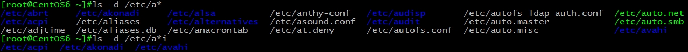
? 表示任意单个字符：
例：ls a?b 显示当前目录下所有以a开头中间有一个字符b结尾的文件，a10b中间夹2个字符，因此不显示：
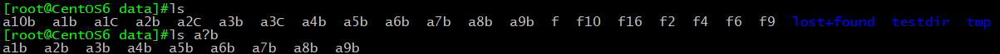
[] 匹配指定范围内任意单个字符：
例：ls -d /etc/[mn]* 显示/etc目录下所有以m开头或者n开头的文件和目录：
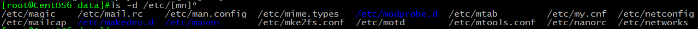
[a-Z]：表示任意一个单个字母：
例：ls -d*[a-Z] 显示目录下所有以字母开头的文件和目录
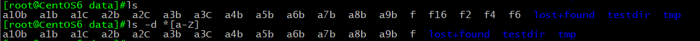
[0-9]：表示任意单个数字：
例：ls -d f[0-9]显示当前目录下所有以f开头后跟任意一个数字的文件和目录，f16因含两个数字，则不予显示：
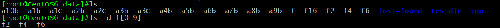
[^]匹配除指定范围以外的任意单个字符：
例：ls -d [^a]* 显示当前目录下所有不是a开头的文件和目录：
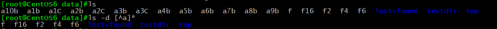
注意：对字符集或数字集取反时，托字符^加在括号内；如：[^0-9]
常用的字符集表示方法：
[:alpha:]表示所有的字母（不区分大小写）
例：ls -d *[[:alpha:]] 显示当前目录下所有以字母结尾（不区分大小写）的文件和目录
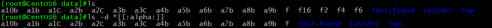
[:digit:]表示任意单个数字，效果同[0-9]
例：ls f[[:digit:]] 显示当前目录下所有f开头，单个数字结尾的文件，值得注意的是：
[:digit:]只代表单个数，f16文件因为f后跟两个数字，则不予显示。
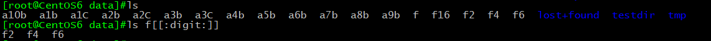
[:lower:]表示任意单个小写字母
例：ls -d [[:lower:]]*[[:lower:]]
显示所有当前目录下以小字字母开头且以小写字母结尾的文件和目录：
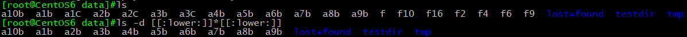
[:upper:]表示任意单个大写字母
例：ls -d a*[[:upper:]] 显示当前目录下 所有以a开头并以一个大写字母结尾的文件和目录：
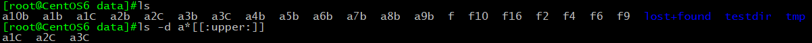
[:alnum:]表示任意单个字母或数字
例：ls -d [[:alnum:]]显示当前目录下 所有以字母或数字结尾的文件和目录：
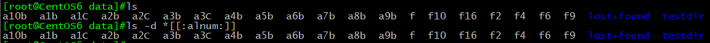